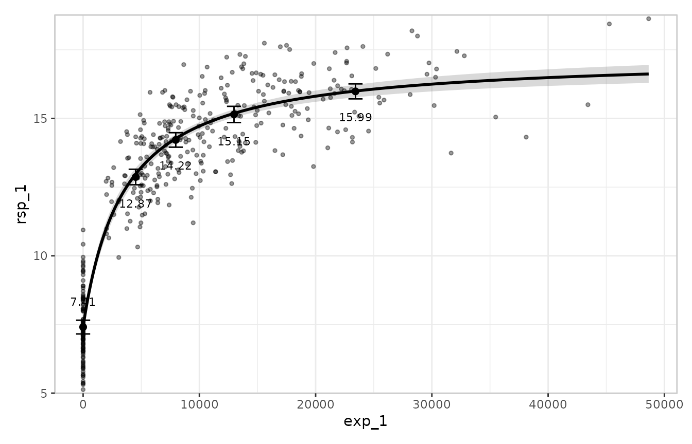
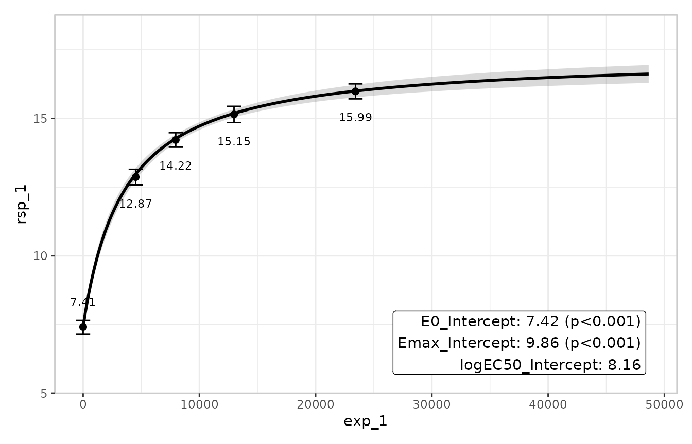
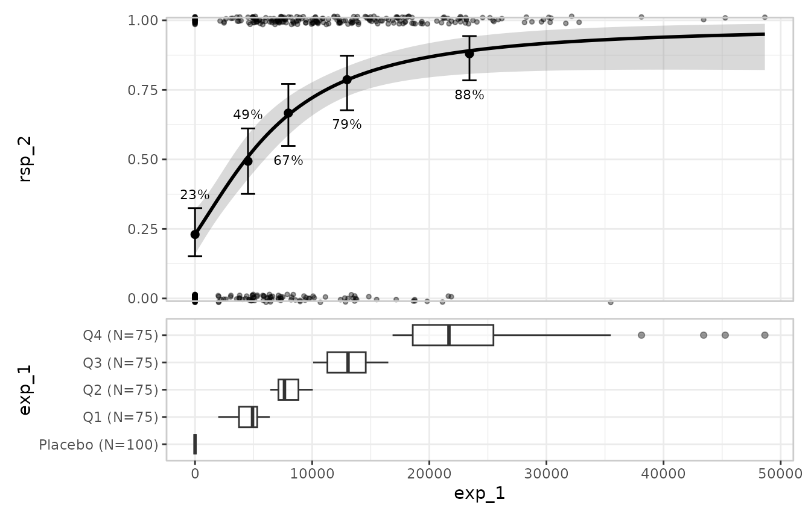
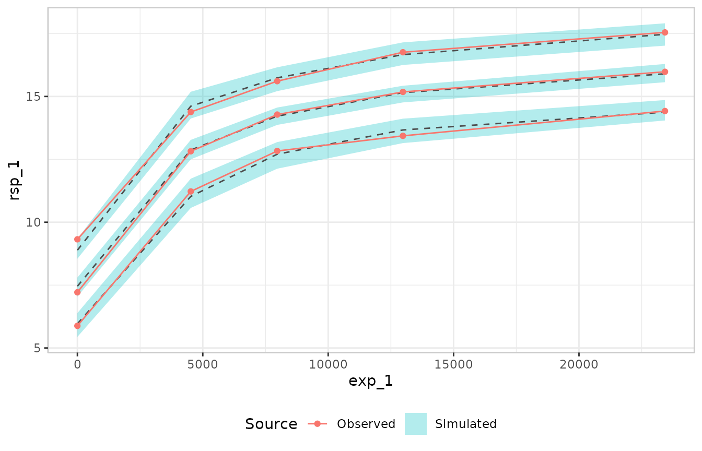
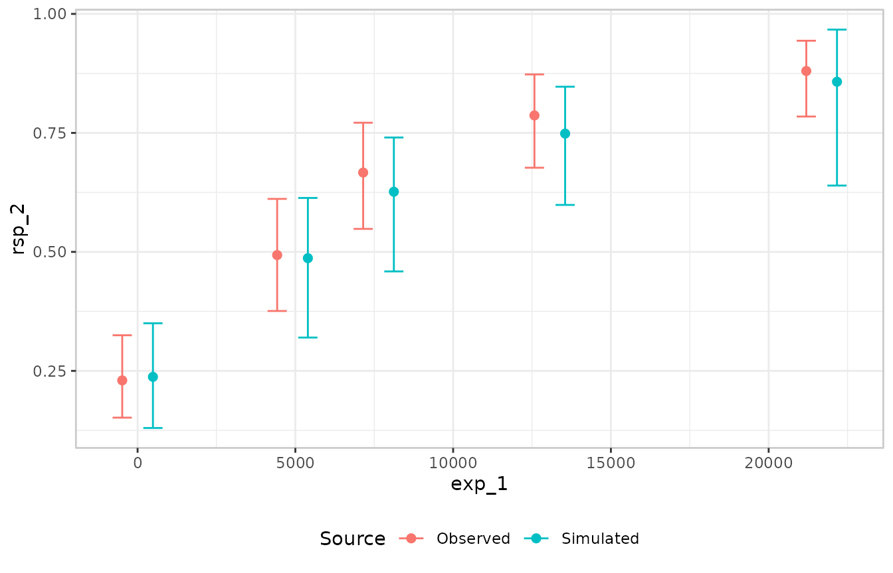

Visualising exposure-response models with erplots
Source:vignettes/articles/erplots-integration.Rmd
erplots-integration.RmdThe erplots package
provides a mini-language for building publication-ready
exposure-response plots and visual predictive checks. It is
model-agnostic: any package that implements three generics —
er_predict(), er_simulate(), and
er_summary() — can drive the plot pipeline. emaxnls
registers methods for both emaxnls and
emaxlogistic objects. They are picked up automatically when
erplots is loaded, so no extra configuration is needed beyond
library(erplots).
This article assumes familiarity with emax_nls() and
emax_logistic(); if you are new to those, start with the continuous and binary model-fitting
articles. For a complete treatment of what erplots can do — theming,
custom style builders, the full option surface of each layer function —
see the erplots
documentation.
Exposure-response plots for continuous models
We start by fitting a simple emax_nls() model on the
bundled emax_df dataset:
mod <- emax_nls(
structural_model = rsp_1 ~ exp_1,
covariate_model = list(E0 ~ 1, Emax ~ 1, logEC50 ~ 1),
data = emax_df
)The erplots pipeline opens with er_plot(), which
declares the dataset and the exposure and response variables. Layers are
added with er_plot_add_*() calls, and the plot is drawn by
calling plot():
emax_df |>
er_plot(exp_1, rsp_1) |>
er_plot_add_model(mod) |>
er_plot_add_quantiles() |>
er_plot_add_data() |>
plot()
The three layers here are:
-
Model layer (
er_plot_add_model()): a credible band for the Emax curve, built by sampling many parameter vectors from the estimated covariance matrix and evaluating the model at each draw. -
Quantile layer
(
er_plot_add_quantiles()): the observed data binned by exposure quantile, with the mean and a confidence interval shown per bin. -
Data layer (
er_plot_add_data()): the raw observations at their actual exposure-response coordinates.
The summary layer
er_plot_add_summary() annotates the plot with a model
summary. For most model types the default style headlines the p-value
for the primary drug-effect term. Emax models have no single privileged
coefficient for that role, so the right style here is
er_style_summary_coefficients, which instead shows one line
per structural parameter:
emax_df |>
er_plot(exp_1, rsp_1) |>
er_plot_add_model(mod) |>
er_plot_add_summary(model = mod, style = er_style_summary_coefficients) |>
er_plot_add_quantiles() |>
plot()
Stratification
Passing a discrete variable to stratify_by adds colour
across all layers, letting you inspect whether the model’s predictions
track the observed data separately within each level of that variable. A
model that includes the stratification variable as a covariate will
produce distinct prediction bands per stratum; a model that omits it
will produce the same band for all strata (which is itself informative —
it means the model is not accounting for that grouping). The erplots
binary responses article has a full worked stratification example
including how to suppress stratification for individual layers with
keep_strata = FALSE.
Exposure-response plots for binary models
The pipeline works identically for emaxlogistic objects.
The emaxlogistic class inherits its
er_predict(), er_simulate(), and
er_summary() methods from emaxnls via S3
inheritance, with internal branches to keep predictions on the
probability scale and to report r_squared = NA in the
summary layer where it would be meaningless. From the calling code there
is nothing extra to do:
mod_b <- emax_logistic(
structural_model = rsp_2 ~ exp_1,
covariate_model = list(E0 ~ 1, Emax ~ 1, logEC50 ~ 1),
data = emax_df
)
emax_df |>
er_plot(exp_1, rsp_2) |>
er_plot_add_model(mod_b) |>
er_plot_add_quantiles() |>
er_plot_add_data() |>
plot()
er_plot() auto-detects the binary response from the
values of rsp_2 (all in
)
and automatically switches to Clopper-Pearson confidence intervals for
the quantile layer and a jitter-style display for the data layer.
Visual predictive checks
A visual predictive check (VPC) compares what a
model predicts against what was actually observed, bin by bin across the
exposure range, making systematic misfit easy to see. The
er_vpc() mini-language generates VPCs from the same
er_predict() and er_simulate() generics.
For a continuous response, the most informative presentation compares observed and simulated quantile distributions rather than just means. Connected lines trace the observed percentiles and shaded ribbons show the corresponding simulated percentile ranges:
emax_df |>
er_vpc(exposure = exp_1, response = rsp_1, response_type = "continuous") |>
er_vpc_add_observed(style = er_style_vpc_observed_quantile_line) |>
er_vpc_add_simulated(
model = mod,
seed = 7438,
style = er_style_vpc_simulated_quantile_ribbon
) |>
plot()
The lines show the 10th, 50th, and 90th percentiles of the observed data in each exposure bin; the ribbons show the same percentiles from the simulated replicates. A well-fitting model will have its ribbons closely enclosing the observed lines; systematic departures — ribbons consistently above or below the lines — suggest that the model is misspecified in some way.
The VPC works the same way for binary models. er_plot()
auto-detects the response type, so passing mod_b (the
emaxlogistic object fitted above) to
er_vpc_add_simulated() is sufficient:
emax_df |>
er_vpc(exposure = exp_1, response = rsp_2) |>
er_vpc_add_observed(dodge = -0.01, errorbar_width = 0.0125) |>
er_vpc_add_simulated(model = mod_b, seed = 7438,
dodge = 0.01, errorbar_width = 0.0125) |>
plot()
For a binary response the default style — mean response rate with a Clopper-Pearson interval, for both the observed and simulated layers — is generally the most appropriate choice, so no custom style functions are needed.
Where to go next
The erplots documentation covers the full feature set in detail:
- Plotting continuous responses — the complete model-layer and quantile-layer options, data overlays, and group panels.
- Plotting binary responses — binary-specific display options, the box-jitter data layer, and stratification.
- Visual predictive checks — VPCs by continuous or discrete covariate, stratified panels, and troubleshooting plot legibility.
- Theming erplots — axis labels, colour palettes, and the underlying ggplot2 theme.